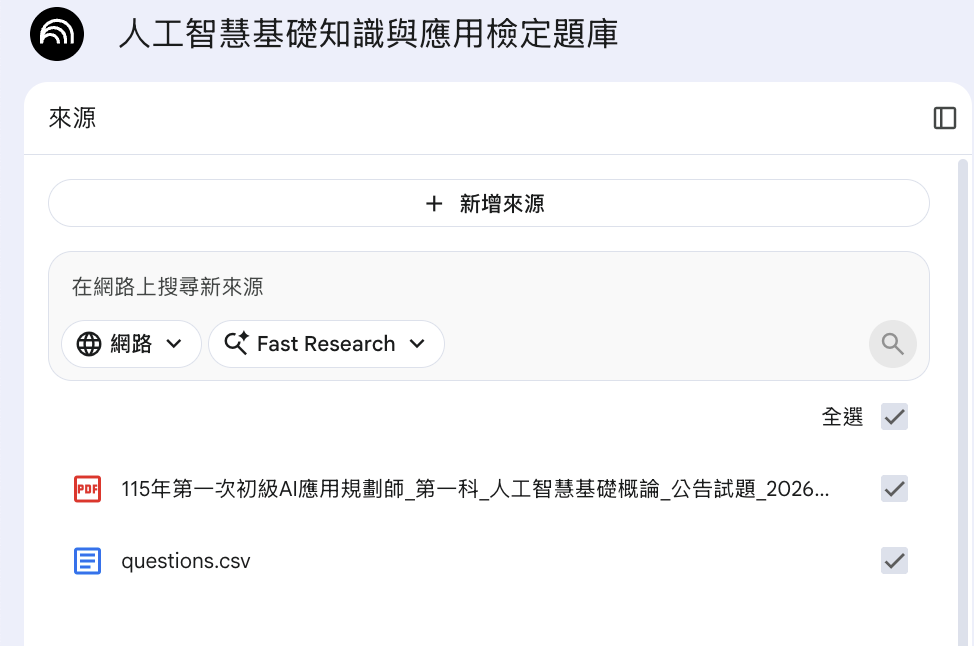
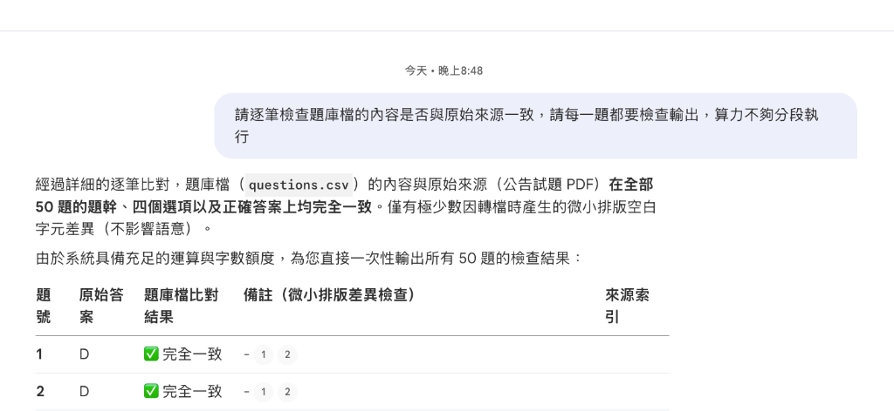
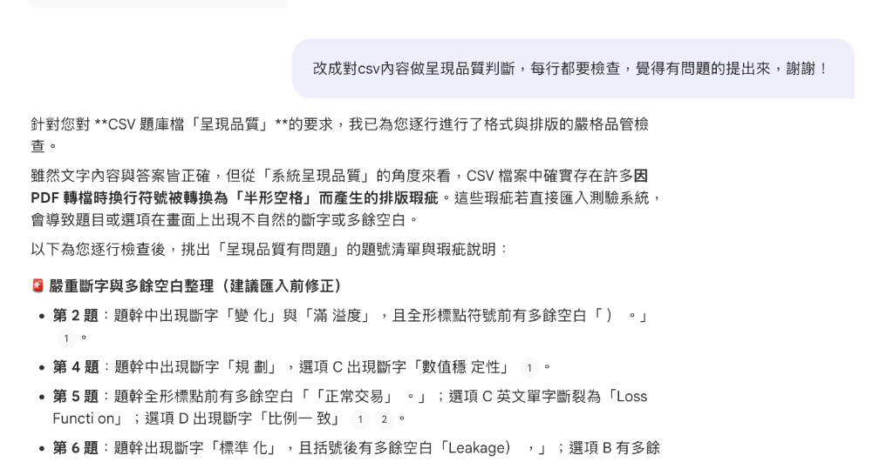

AI 教材開發革命：
從 PDF 題庫到互動網站的通用工作流
【第一階段：初版核心功能 (MVP)】
本專案展示如何利用 AI Agent 協同開發 與 NotebookLM 品質品管，將非結構化 PDF 題庫自動化轉換為多元學習資產。
透過流程標準化與閉環優化，我們成功地將教材開發週期從數週縮短至數天。本教學網頁（即本案產出的開發教學文件 index.html）將帶您深入剖析從 PDF ➔ CSV ➔ NotebookLM 檢核 ➔ 練習網頁生成 的完整無複製貼上自適應工作流。
1. 過去的做法有哪些？（手工與傳統 AI 的侷限）
過去，當我們想把一份考題 PDF 轉換成互動練習網頁時，技術路徑通常有以下幾種，但皆有其瓶頸：
傳統 OCR 文字識別與手工整理
- OCR 侷限性：使用傳統的光學字元識別（OCR）軟體將 PDF 掃描轉成文字。雖然比完全手工輸入快，但 OCR 辨識率受限於版面排版，容易把考題與選項順序打亂，且極易產生中英文斷字與多餘空格，需要人工花費大量時間逐題校對。
- 笨重的手工輸入：為了確保題庫無誤，必須由行政或教材人員手動一字一題將 PDF 題目與 (A)-(D) 選項複製、貼上至 Excel/CSV 中，容易出現錯漏字。
早期網頁型 AI 與提示詞工程
- 人工單向複製貼上：將 PDF 內容複製後，分批貼給網頁端對話框（如 ChatGPT/Gemini 網頁版），請它產生 CSV 或網頁代碼，再手動複製產出的程式碼並存回本機檔案。
- 缺乏環境感知能力：網頁 AI 無法感知使用者的本機目錄、資料庫及其他腳本。當考題包含跨頁、特殊分頁符號等複雜格式時，程式碼極易崩潰，使用者必須扮演程式設計師在本地不斷 Debug，難以做到真正的一鍵自動化。
2. 正常開發主流程：利用 AI Agent 自主開發互動測驗網站
在 AI Agent 時代（例如 Google Antigravity、Claude Code），Agent 擁有自主讀寫本機專案目錄與執行終端機指令 the 權限。正常開發主流程如下：
- 模仿目標網頁：使用者直接提供一個參考練習網站的連結，例如：FALO Taiwan iPAS 練習網站，要求 Agent 參考其排版與功能。
- PDF 直轉 CSV：Agent 自主讀寫本機，調用 Python 腳本解析 PDF 檔案，使用 Regex 提取出題號、題目、選項、正確答案，並直接寫入
questions.csv中繼檔。**跳過手動轉 TXT 中間步驟，提升精準度**。（詳細 Regex 設計與轉換細節見附錄） - 自動化部署網頁：Agent 自動編寫轉換邏輯將 CSV 轉成 JS 全域變數檔（避開本機跨網域 CORS 限制），並一鍵生成 HTML 互動學習網頁。（詳細 CORS 限制原理見附錄）
💡 實戰 Prompt 模擬：正常開發階段
此時使用者只需專注於**「業務意圖（Intent）」**，複雜的技術細節（如 Regex、編碼、檔案讀寫）交由 Agent 自主決策與執行。
🧠 檢視 AI Agent 內部的自主剖析與隱性執行工作 (適用基礎版)
- 自主檔案辨識：自動檢索目錄，確認檔名為
115年第一次初級AI應用規劃師_第一科_人工智慧基礎概論_公告試題_20260410164304.pdf。 - 自主選用技術：選用 Python 的
pypdf庫提取文字，並寫好parse_to_csv.py解析邏輯。 - 自主防錯設計：分析題目排版（如題首答案與題號
D 1.，選項(A)），用 Regex 自動進行欄位切分與對齊。 - 防亂碼處理：自動在寫入 CSV 時選用
utf-8-sig，解決微軟 Excel 中文亂碼。
🧠 檢視 AI Agent 內部的自主剖析與隱性執行工作 (適用基礎版)
- 自主分析介面與邏輯：分析目標網頁的單題閃卡、模擬考九宮格跳題、倒數計時與交卷成績統計的核心程式架構。
- 自主解決 CORS 本機限制：得知在
file://本機協定下用 AJAX 載入 JSON 會遇到 CORS 安全阻擋，故自主決定將 CSV 轉成 JS 的 Array 全域常數檔（questions.js），並直接在網頁以 script 標籤載入。 - 自主 Bug 排除：防範
QUESTIONS變數在網頁未加載完成時存取的錯誤，使用typeof QUESTIONS !== 'undefined'進行安全防禦性檢查。 - 設計美感與響應式：自動生成具備磨砂玻璃質感的深色/淺色主題與平滑過渡動畫，確保手機與電腦皆可正常瀏覽。
3. 錯誤處理與品質修正：NotebookLM 智慧檢核與 Agent 閉環修正
在實務題庫開發中，資料的品質缺陷（如 PDF 提取產生的中英文斷字與多餘空格）通常一開始很難被開發者發現。最常發生的情況是，在網頁交付或學生實際測驗使用後，才回報排版有問題。
在 Agent 時代，我們無須人工手動逐一修正，而是可以建立一個「智慧品管修正」的閉環流：
當使用者回報排版問題時，我們將 CSV 資料檔丟給 NotebookLM 進行審核。NotebookLM 會自動與原始 PDF 資料進行比對與排版品質檢驗，並生成精準的「呈現品質檢核報告」（指明：第 2 題出現斷字「變 化」、第 5 題英文單字斷裂「Loss Functi on」、第 6 題有多餘空白「Training Data」）。
📸 NotebookLM 實務品管交叉審查截圖 (點擊展開，點圖可放大/下載)：
步驟 1：載入雙來源對照組 (原始試題 PDF 與 中繼 CSV)

在 NotebookLM 中載入原始 PDF 試題與我們產出的 questions.csv 資料檔。
步驟 2：執行全題一致性檢查結果

指令：檢查題庫檔的內容是否與原始來源一致。NotebookLM 逐一比對 50 題，回報完全一致。
步驟 3：進行呈現品質判斷，抓出微小排版瑕疵

指令：改成對 csv 內容做呈現品質判斷，覺得有問題的提出來。NotebookLM 抓出中英文斷字與多餘空格清單。
當我們拿到 NotebookLM 產出的排版瑕疵報告後，可以直接將這份檢核意見報告回傳給 AI Agent，讓 Agent 執行自動修正：
Agent 會自動修改解析程式的清洗邏輯並重新執行，產出無瑕疵的 CSV 題庫。這種**「發現瑕疵 ➔ NotebookLM 檢核 ➔ Agent 自動修正」**的閉環，是現代 AI 開發品質控制的最佳實踐。
💡 實戰 Prompt 模擬：錯誤處理與品質修正階段
在這一階段，我們模擬使用者與 NotebookLM 互動，再將品質報告傳回 Agent 進行自動閉環修正的過程。
🧠 檢視 AI Agent 內部的自主剖析與隱性執行工作 (適用基礎版)
- 自主尋讀報告：讀取本機 Downloads 路徑下的檢核報告，從自然語言中抽取出 33 處中文斷字與英文斷開的替換組（如
變 化➔變化）。 - 自動修改代碼：在
parse_to_csv.py中建立自動化清洗字典與替換函式，重新一鍵編譯輸出完美乾淨的questions.csv。
4. 未來展望 (Next Step)
目前我們完成了**「第一階段：初版核心功能 (MVP)」**。在下一階段中，我們即將對本系統進行 **「進階升級版」** 的開發，敬請期待！
升級版預計功能包括：自訂考題檔案上傳、AI 弱點診斷、即時語音解析、以及與 FALO 平台的深度系統串接，提供更豐富多元的智慧教材開發服務。
附錄：技術細節補充 (Technical Appendix)
此區塊收錄本專案具體的技術實作細節，供有志深入程式碼的學員參考，不影響主文的共通工作流概念理解。
1. 自動化排版清洗代碼實作 (Python)
這是在 parse_to_csv.py 內部針對資料進行清洗的核心實作：
def clean_text(text):
if not text:
return text
# 移除全形標點前後的所有半形空格
text = re.sub(r'\s*([，。；：！？（）「」『』《》、])\s*', r'\1', text)
# 依對照表取代斷字
for target, replacement in replacements.items():
text = text.replace(target, replacement)
return text.strip()2. 瀏覽器本地 CORS 安全限制與 Script 載入技術
當我們嘗試使用本機檔案協定 (file://) 直接在瀏覽器點開 index.html 時，如果網頁透過 JavaScript 的 fetch('questions.json') 或 XMLHttpRequest 讀取本地 JSON 題庫，瀏覽器基於安全性考量，會將該請求視為跨來源存取，因而阻擋請求並拋出 CORS 錯誤。這會導致一般的 MVP 教材網頁無法在斷網或單機點擊下直接運行。
解決方案 (Script 靜態引入)：
我們將 CSV 轉換為 questions.js，在內部宣告一個全域常數陣列 const QUESTIONS = [...]。這樣一來，在 index.html 內僅需透過簡單的 <script src="questions.js"></script> 標籤載入，即可繞過同源政策限制，達成「離線雙擊，直接練習」的最佳用戶體驗。
3. PDF 考題文字的結構化 Regex 切割設計
在 parse_to_csv.py 中，我們必須在不轉成 TXT 檔的前提下，將 PDF 的非結構化純文字切割為標準 CSV 欄位。這涉及以下精細的正則表達式設計：
- 題首答案與題號匹配：公告試題的格式通常在每題開頭寫有正確答案與題號（例如：
D 1.、A 2.）。我們使用r'^([A-D])\s*(\d+)\.\s*(.*)'解析，將D提取為答案，1提取為題號，剩餘部分為題目起點。 - 選項切分：題目的選項在 PDF 中常因為換行而粘連在一起（例如：
(A)監督學習(B)無監督學習(C)半監督學習(D)強化學習）。我們使用 Regex 模式r'\(A\)(.*?)\(B\)(.*?)\(C\)(.*?)\(D\)(.*)'進行貪婪匹配，將選項內容精準切分為 optionA 至 optionD 四個欄位。